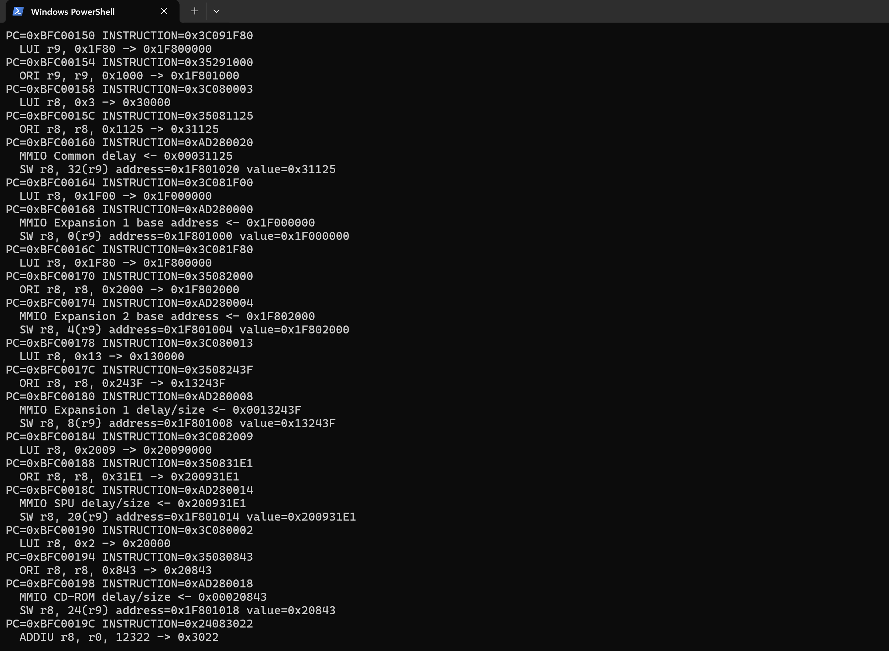
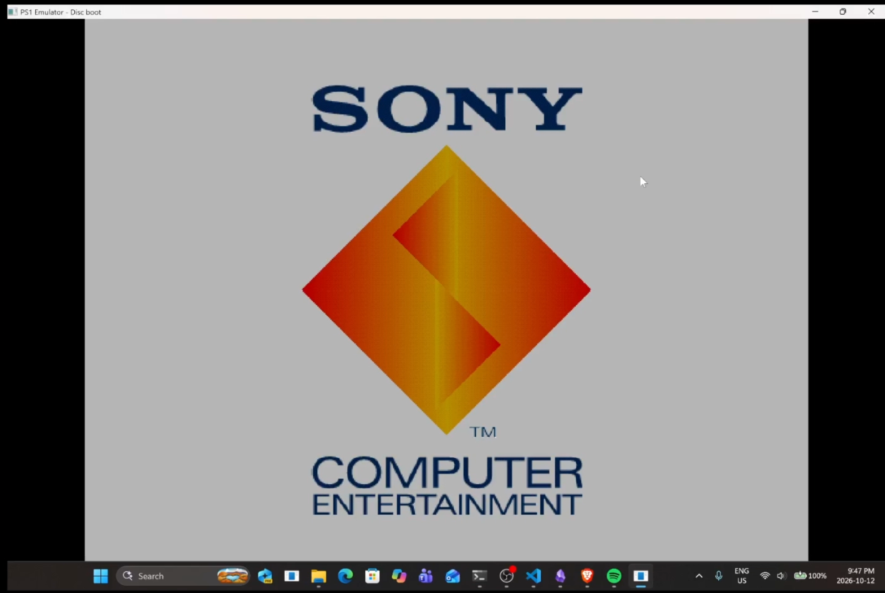
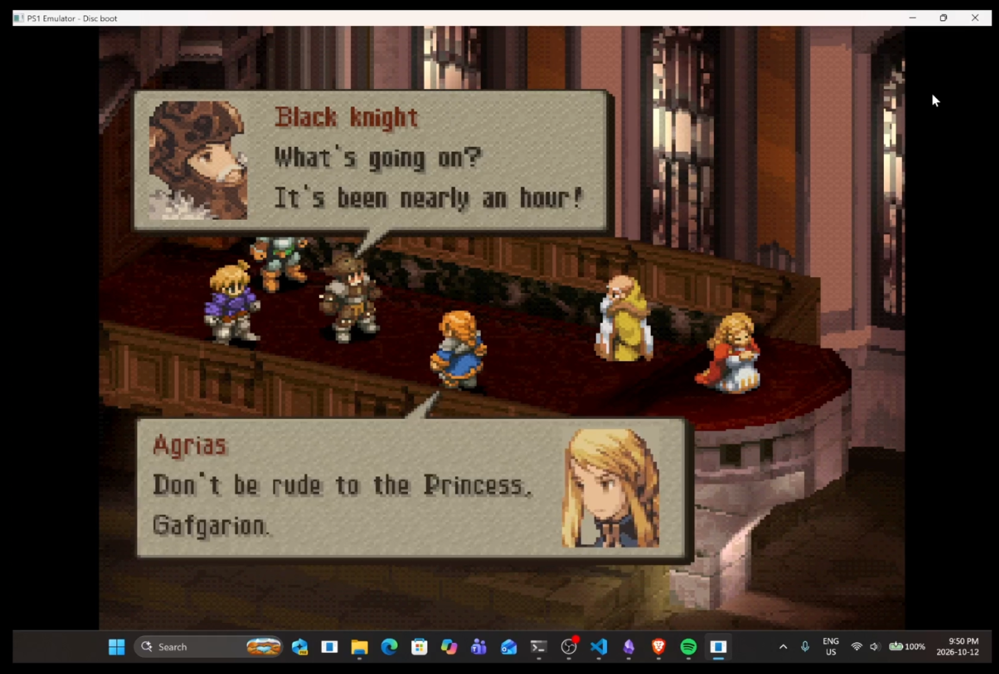

THE FOUNDATION
Recreating the original hardware
The emulator recreates the PlayStation's CPU, memory map, and graphics hardware in C++. It executes MIPS instructions, routes memory accesses, and renders the console's output.
Execution
MIPS instructions and program state.
Memory
Address mapping and hardware interaction.
Graphics
Turning console output into a visible frame.
RUNNING THE STARTUP CODE
Executing BIOS instructions
The BIOS contains the console's startup code. The emulated CPU fetches, decodes, and executes its MIPS instructions, updating registers and accessing memory through the emulated memory map.
This connects CPU execution to hardware initialization and leads into the console's boot sequence.


FIRST VISIBLE MILESTONE
Bringing up the console
The familiar Sony startup screen gives the project a concrete visual milestone. Instead of looking only at internal state, there is now recognizable console output in the emulator window.
Startup connects the lower-level work to an observable result. It is a useful checkpoint on the way to running a game, while later scenes exercise more of the system.


BEYOND STARTUP
Reaching an in-game scene
The next visible result is an in-game dialogue scene. The capture shows character sprites, portraits, text boxes, and the environment together in the emulator window.
This makes the progress easier to evaluate: the output has moved from a startup screen to a scene with several visual elements composed in one frame. The capture documents that scene; broader compatibility and accuracy remain ongoing work.


THE PROJECT IN MOTION
Demo recording
The recording adds a view of the emulator over time alongside the still captures. Use the playback controls to watch or scrub through the demonstration.
ONGOING DEVELOPMENT
Building toward greater accuracy
The startup and game captures provide visible checkpoints for a project that is still in development. The next direction is to deepen correctness and understand where behavior diverges from the original hardware.
Instruction-level checks, execution traces, and comparisons of rendered output offer ways to investigate those differences. Timing, device interactions, and broader game coverage are areas to examine as the emulator develops further.